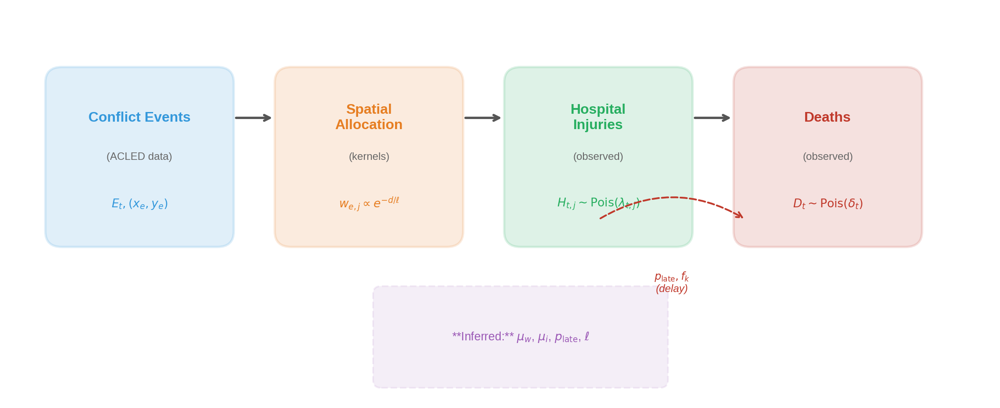
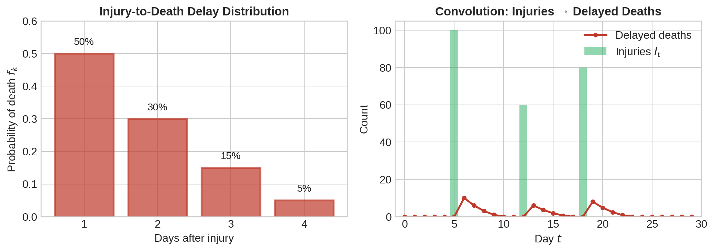
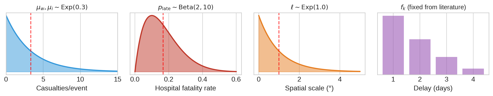
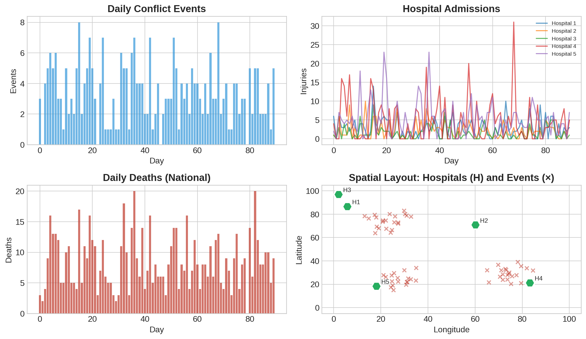
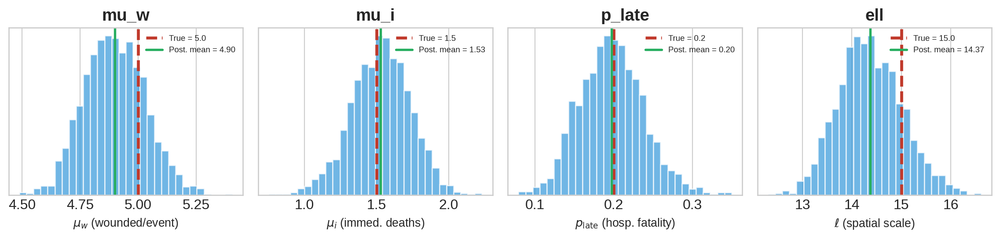
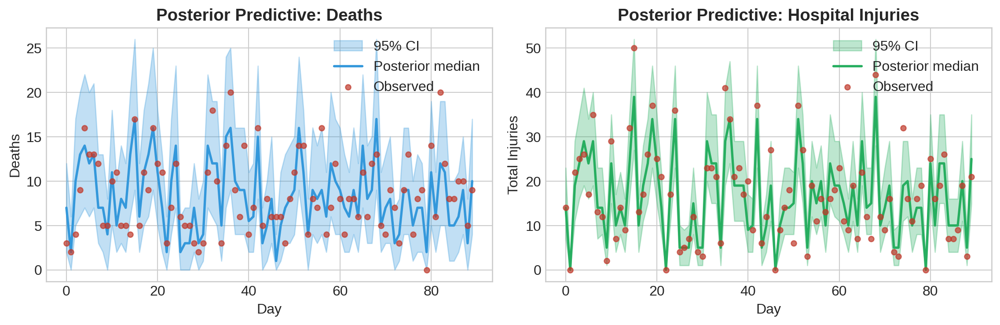
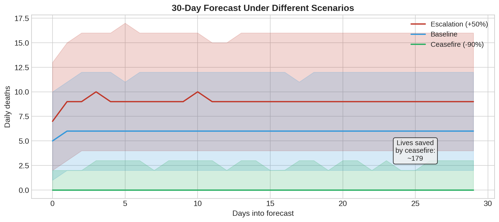
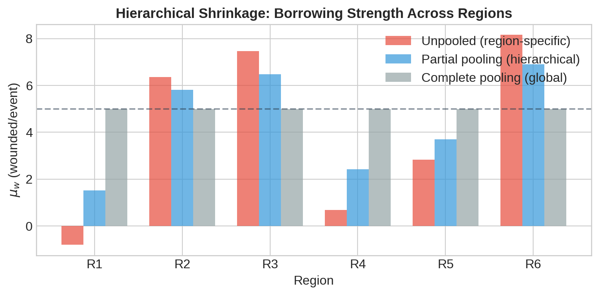
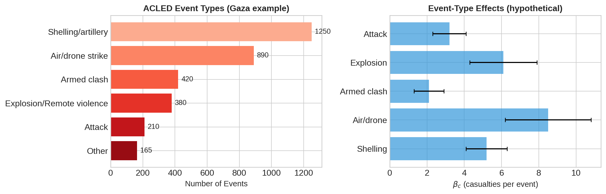

TRACE
Temporal and Regional Analysis of Conflict Events
Imperial College London
In partnership with Médecins Sans Frontières
2025-12-08
The Problem
Partnership with Médecins Sans Frontières
MSF Gaza approached us with a critical operational question:
“During active conflict, can we produce short-term forecasts of hospital patient volumes and their typology of needs, so we can stock and staff in preparation?”
Challenges in conflict settings:
- Under-reporting: True tolls often exceed official figures
- Multiple incomplete data streams: Events, hospitals, mortality
- Spatial complexity: Casualties distributed across hospitals
- Temporal delays: Deaths occur days/weeks after injury
- Uncertainty quantification: Critical for resource planning
- Real-time needs: Operational decisions can’t wait
Important
Fitting targets available: National death toll, hospital patient volumes and needs over time
Existing Approaches
Mechanistic Models
- Lanchester equations: \(\frac{dN_1}{dt} = -\alpha_2 N_2\)
- Agent-based simulations
- Network models
✓ Interpretable
✗ Hard to fit to data
✗ Require unknown force sizes
✗ No spatial structure
Statistical Models
- ARIMA, GLMs
- Machine learning / neural networks
- Time series forecasting
✓ Flexible, good short-term
✗ No mechanistic insight
✗ Poor extrapolation
✗ Can’t encode scenarios
Tip
TRACE: Semi-mechanistic approach—explicit casualty generation process combined with principled statistical inference
Inspiration: COVID-19 Epidemic Models
TRACE adapts the semi-mechanistic framework from Flaxman et al. (2020):
| Epidemiology | Conflict (TRACE) |
|---|---|
| Susceptible population | Population at risk |
| Infections (\(R_t\)) | Conflict events (intensity) |
| Hospitalizations | Hospital admissions |
| Deaths (with delays) | Deaths (immediate + delayed) |
| Age-stratified contacts | Spatial allocation to hospitals |
Warning
Key difference: Conflict events are exogenous (driven by military operations), not self-propagating like infections. This simplifies the model—no renewal equation needed.
The TRACE Framework
Three coupled components: Events → Spatial Allocation → Injuries ⇄ Deaths
Mathematical Formulation
Observation Models
Hospital injuries \(H_{t,j}\) at hospital \(j\) on day \(t\), and national deaths \(D_t\):
\[ H_{t,j} \sim \text{Poisson}(\lambda_{t,j}), \quad D_t \sim \text{Poisson}(\delta_t) \]
Expected Injuries (Spatial Allocation)
\[ \lambda_{t,j} = \mu_w \sum_{e \in E_t} w_{e,j}, \quad \text{where } w_{e,j} = \frac{\exp(-d_{e,j}/\ell)}{\sum_{j'} \exp(-d_{e,j'}/\ell)} \]
- \(\mu_w > 0\): average wounded per event
- \(d_{e,j}\): distance from event \(e\) to hospital \(j\)
- \(\ell > 0\): spatial length scale (inferred)
Expected Deaths (Immediate + Delayed)
\[ \delta_t = \underbrace{\mu_i |E_t|}_{\text{immediate}} + \underbrace{p_{\text{late}} \sum_{k=1}^L I_{t-k} f_k}_{\text{delayed hospital deaths}} \]
The Delay Distribution
Deaths don’t occur immediately after injury—this temporal structure is critical:

\[ \text{Delayed deaths on day } t = p_{\text{late}} \sum_{k=1}^L I_{t-k} f_k \]
Based on trauma literature: ~50% of hospital deaths within 24h, tail extends to weeks.
Prior Specifications
Weakly informative priors balance regularization with data-driven inference:
| Parameter | Prior | Interpretation |
|---|---|---|
| \(\mu_w\) | \(\text{Exp}(0.3)\) | Mean ~3.3 wounded per event |
| \(\mu_i\) | \(\text{Exp}(0.3)\) | Mean ~3.3 immediate deaths per event |
| \(p_{\text{late}}\) | \(\text{Beta}(2, 10)\) | Mean ~17% hospital fatality rate |
| \(\ell\) | \(\text{Exp}(1.0)\) | Mean ~1° (~100 km) spatial scale |

Simulating Conflict Data
Let’s simulate a realistic 90-day conflict scenario:
from trace.simulate import simulate_conflict_data
# True parameters
TRUE_PARAMS = {
'mu_w': 5.0, # Wounded per event
'mu_i': 1.5, # Immediate deaths per event
'p_late': 0.20, # 20% hospital fatality rate
'ell': 15.0, # Spatial length scale
}
delay_probs = np.array([0.5, 0.3, 0.15, 0.05])
# Simulate data
sim_data = simulate_conflict_data(
n_regions=3, n_hospitals=5, T=90,
mu_w_true=TRUE_PARAMS['mu_w'],
mu_i_true=TRUE_PARAMS['mu_i'],
p_late_true=TRUE_PARAMS['p_late'],
delay_probs=delay_probs,
ell_true=TRUE_PARAMS['ell'],
events_rate=3.0, # 3 events per day on average
seed=42
)
print(f"Simulated {len(sim_data['events'])} events over 90 days")
print(f"Total injuries: {sim_data['hospital_incidence'].sum()}")
print(f"Total deaths: {sim_data['national_deaths'].sum()}")Simulated 307 events over 90 days
Total injuries: 1505
Total deaths: 764Visualizing Simulated Data

Running Bayesian Inference
from trace.analysis import run_inference
# Prepare data for inference
events_by_day = np.array([sum(1 for e in sim_data['events'] if e['date'] == d) for d in range(90)])
event_day_index = np.array([e['date'] for e in sim_data['events']])
event_coords = np.array([[e['latitude'], e['longitude']] for e in sim_data['events']])
# Run MCMC (reduced samples for demo)
mcmc, samples = run_inference(
events_by_day=events_by_day,
event_day_index=event_day_index,
event_coords=event_coords,
hospital_coords=sim_data['hospital_coords'],
injuries_obs=sim_data['hospital_incidence'],
deaths_obs=sim_data['national_deaths'],
delay_probs=delay_probs,
num_warmup=500,
num_samples=1000,
num_chains=2,
rng_seed=0,
progress_bar=False
)MCMC completed. Checking parameter recovery...Parameter Recovery
Can we recover the true parameters from the simulated data?

Parameter Recovery Summary:
--------------------------------------------------
mu_w : True = 5.00, Post. mean = 4.90 [4.66, 5.16] ✓
mu_i : True = 1.50, Post. mean = 1.53 [1.11, 1.90] ✓
p_late : True = 0.20, Post. mean = 0.20 [0.12, 0.28] ✓
ell : True = 15.00, Post. mean = 14.37 [13.18, 15.74] ✓Posterior Predictive Check
Does the model reproduce the observed data?

Scenario-Based Forecasting
What if we project 30 days under different scenarios?
from trace.analysis import forecast
recent_rate = np.mean(events_by_day[-30:]) # Recent average events/day
# Scenario 1: Baseline (continue current rate)
baseline = forecast(samples, np.full(30, recent_rate), delay_probs)
# Scenario 2: Ceasefire (90% reduction)
ceasefire = forecast(samples, np.full(30, recent_rate * 0.1), delay_probs)
# Scenario 3: Escalation (50% increase)
escalation = forecast(samples, np.full(30, recent_rate * 1.5), delay_probs)
print(f"30-Day Projections (median deaths):")
print(f" Baseline: {baseline['deaths_median'].sum():.0f}")
print(f" Ceasefire: {ceasefire['deaths_median'].sum():.0f}")
print(f" Escalation: {escalation['deaths_median'].sum():.0f}")
print(f"\nLives saved by ceasefire: {baseline['deaths_median'].sum() - ceasefire['deaths_median'].sum():.0f}")30-Day Projections (median deaths):
Baseline: 179
Ceasefire: 0
Escalation: 270
Lives saved by ceasefire: 179Forecast Comparison

Hierarchical Extension
For multi-region analysis, we can partially pool parameters:
\[ \begin{aligned} \mu_{w,r} &= \bar{\mu}_w \cdot \exp(\eta_r), \quad \eta_r \sim \mathcal{N}(0, \sigma_\mu^2) \\ \mu_{i,r} &= \bar{\mu}_i \cdot \exp(\xi_r), \quad \xi_r \sim \mathcal{N}(0, \sigma_i^2) \\ p_{\text{late},r} &\sim \text{Beta}(\alpha_0 + \gamma_r, \beta_0) \end{aligned} \]
where \(r\) indexes regions/conflict zones.

Note
Benefit: Regions with sparse data borrow strength from data-rich regions.
Extension: Event Types → Injury Types
ACLED encodes event types (airstrikes, shelling, armed clashes, etc.). Can these predict injury typology?
\[ \mu_{w,t} = \sum_{c \in \mathcal{C}} \beta_c \cdot \mathbb{1}[\text{event type} = c] \]
MSF Operational Need
Different event types may predict different patient needs:
| Event Type | Expected Injuries | Typology |
|---|---|---|
| Airstrike | High casualty mass events | Burns, blast trauma, amputations |
| Shelling | Moderate, clustered | Shrapnel wounds, crush injuries |
| Armed clash | Variable, combatants | Gunshot wounds |
| Explosion | High severity | Blast injuries, TBI |
Research question: Is reported event type predictive of injury types after controlling for event intensity?
ACLED Event Type Distribution

Extension: Fit \(\beta_c\) for each event type to predict casualty counts and types.
Data Sources
Input Data Streams
- ACLED (acleddata.com)
- Geo-coded conflict events
- Date, location, type, actors
- Reported fatalities
- Hospital Records (MSF, MoH)
- Patient volumes over time
- Injury types and severity
- Mortality Data (MoH, Tech for Palestine)
- Daily/cumulative death tolls
- Breakdown by demographics
Gaza Context
- ACLED: 27,815+ events (Oct 2023–present)
- Tech for Palestine API: Daily mortality
- MSF Hospital Data:
- Patient volumes
- Surgical cases
- Typology of needs
Important
Real hospital data enables fitting—this is what MSF provides that makes the model operationally useful.
Implementation Stack
Core Technologies
- JAX: GPU-accelerated arrays, autodiff
- NumPyro: Probabilistic programming, NUTS
- ArviZ: Diagnostics & visualization
- Python: Open-source package
Key Features
- NUTS sampler (adaptive HMC)
- GPU acceleration via JAX
- Hierarchical model support
- Synthetic data generation
- Scenario-based forecasting
- Posterior predictive checks
Applications for MSF
- Short-term forecasting (1-7 days)
- Predict patient volumes at specific hospitals
- Plan surgical team deployment
- Pre-position medical supplies
- Typology prediction (extension)
- Anticipate injury types from event patterns
- Stock appropriate supplies (burn kits vs. trauma kits)
- Scenario planning
- Quantify impact of ceasefire/escalation
- Inform advocacy with uncertainty-quantified projections
- Resource optimization
- Optimal allocation across facilities
- Identify underserved geographic areas
- Retrospective analysis
- Estimate true casualty burdens
- Evaluate intervention effectiveness
Limitations & Future Work
Current Limitations
- Data quality: All inference conditional on reporting accuracy
- Identifiability: Some parameters confounded (e.g., \(\mu_i\) vs. \(p_{\text{late}}\))
- Indirect deaths: Model captures only direct casualties
- Static spatial structure: Doesn’t model hospital damage/closure
Planned Extensions
- Time-varying parameters: \(\mu_{w,t}\) with random walk priors
- Event-type regression: \(\beta_c\) for injury type prediction
- Population displacement: Dynamic population at risk
- Self-exciting events: Endogenous conflict propagation
- Missing data imputation: Within model structure
Summary
TRACE provides a principled framework for conflict casualty analysis
- Semi-mechanistic: Explicit casualty generation + statistical inference
- Multi-stream: Integrates events, hospital admissions, mortality
- Spatial: Distance-based allocation to hospitals
- Temporal: Delay distributions from injury to death
- Bayesian: Full uncertainty quantification
- Actionable: Scenario-based forecasting for operational planning
Acknowledgments
- Médecins Sans Frontières — partnership and operational context
- ACLED & Tech for Palestine — open data access
- Imperial College London — research support
Tip
Contact: trace@imperial.ac.uk | Code: github.com/imperial-college/trace
Thank You
Questions?
TRACE: Temporal and Regional Analysis of Conflict Events
Imperial College London × Médecins Sans Frontières

TRACE: Semi-Mechanistic Bayesian Models for Conflict Casualty Analysis